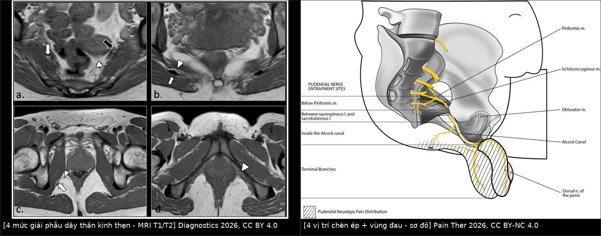
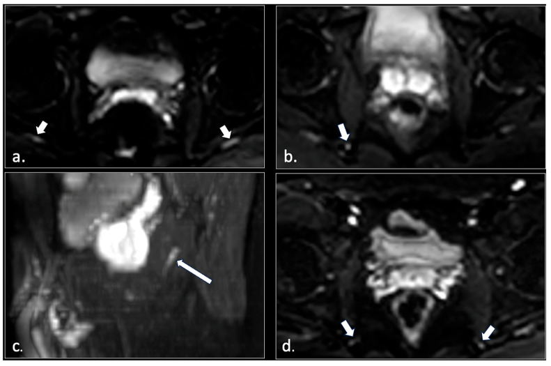
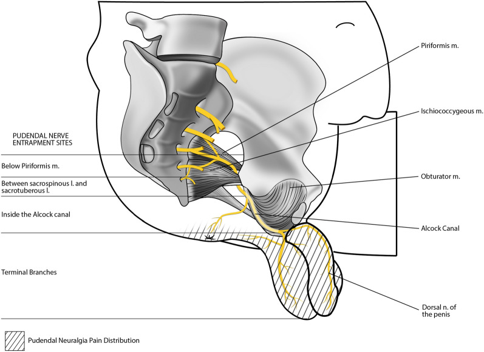
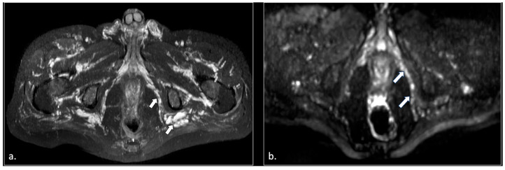

556 — Đau sàn chậu cơ–mạc & đau thần kinh thẹn: phân biệt bằng lâm sàng, MRI và block
Tags: pattern:dau-san-chau vung:tieu-khung vung:truc-trang-hau-mon score:Nantes protocol:MRI-san-chau protocol:MR-neurography
Mức chắc chắn (certainty): tổng hợp y văn (literature synthesis) — nhóm tự biên từ bài tổng quan và loạt ca mở (Diagnostics 2026, Pain Ther 2026, Cureus 2024, BMC Gastroenterol 2025); số liệu lấy từ Fig/bảng của bài gốc, chưa gắn một bệnh án riêng.
1. Tổng quan — hai bệnh cảnh “đau khi ngồi”, hai cơ chế khác nhau
- Đau sàn chậu mạn (chronic pelvic floor pain) là ô chẩn đoán dễ nhầm vì cùng biểu hiện đau vùng hậu môn–sinh dục, tăng khi ngồi. Cần tách ít nhất hai nhóm:
- Đau cơ–mạc (myofascial): hội chứng cơ nâng hậu môn (levator ani syndrome, LAS) — co thắt/điểm kích hoạt (trigger point) của cơ mu–trực tràng và cơ nâng; đau do co cơ, không có tổn thương thần kinh.
- Đau thần kinh (neuropathic): đau thần kinh thẹn (pudendal neuralgia, PN) — chèn ép/viêm dây thần kinh thẹn (S2–S4) dọc đường đi; đau theo phân bố thần kinh, có thể có dị cảm, đau bỏng rát.
- Giải phẫu dây thần kinh thẹn — 4 mức phải thuộc: (1) rễ S2–S4 và đám rối cùng, bắt chéo cơ hình lê (piriformis); (2) khe giữa dây chằng cùng–gai và cùng–ủng (sacrospinous–sacrotuberous) quanh gai ngồi (ischial spine); (3) ống Alcock trong cân cơ bịt trong (obturator internus); (4) các nhánh tận (thần kinh trực tràng dưới, thần kinh đáy chậu, thần kinh lưng dương vật/âm vật). Mỗi mức là một vị trí chèn ép có biểu hiện và cách xử trí riêng.
- TẠI SAO đau tăng khi ngồi: ngồi tạo áp lực trực tiếp lên đáy chậu và kéo căng dây thần kinh quanh gai ngồi/ống Alcock; đứng hoặc nằm giải phóng lực này. Đây là đặc điểm bắt buộc trong tiêu chuẩn Nantes.
- TẠI SAO MRI thấy được dây thần kinh: dây thần kinh ngoại biên chứa nước dị hướng (anisotropic) dọc theo sợi trục; khi có phù/viêm/myelin hư hại, nước tự do tăng → tăng tín hiệu trên DWI và trên T2/STIR. Tuy nhiên T2 fat-sat/STIR thường bị nhiễu do mạch máu cạnh thần kinh cũng sáng — vì vậy bài gốc dùng DWI EPI (b = 0, 100, 600) để tách thần kinh khỏi mạch. Trong loạt 81 bệnh nhân: 42/81 (52%) có bất thường tín hiệu DWI của dây thần kinh thẹn (33 một bên, 9 hai bên); 23/42 ca có thêm nguyên nhân ngoài thần kinh (phì đại cơ hình lê, tổn thương dây chằng cùng–ủng, rách cơ mu–cụt, xơ ống Alcock, nang Tarlov, u bao dây thần kinh, giãn tĩnh mạch thẹn).
- Ngưỡng và tiêu chuẩn lâm sàng (bắt buộc thuộc):
- Nantes 2008 — 5 tiêu chuẩn thiết yếu của PN: (1) đau trong phân bố thần kinh thẹn (từ hậu môn đến dương vật/âm vật); (2) đau chủ yếu khi ngồi; (3) không đánh thức ban đêm; (4) không mất cảm giác khách quan; (5) giảm đau sau block thần kinh thẹn chẩn đoán. Tiêu chuẩn loại trừ: đau khu trú ở xương cụt, mông, xương mu, hạ vị; ngứa; đau cơn kịch phát thuần túy; có bất thường hình ảnh giải thích được đau.
- Rome IV — LAS: đau/khó chịu trực tràng tái diễn, cơn ≥ 30 phút, đau khi kéo cơ mu–trực tràng (thăm khám), loại trừ nguyên nhân khác; tiêu chuẩn kéo dài 3 tháng, khởi phát ≥ 6 tháng trước chẩn đoán.
- Proctalgia fugax: đau vài giây đến vài phút (hiếm tới 30 phút), biến mất hoàn toàn — không phải LAS/PN.
- Dịch tễ định lượng: PN ~1% dân số (một số nguồn ghi 1/100.000, nữ > nam gấp đôi); khảo sát ở Mỹ: đau trực tràng chức năng không đặc hiệu 11,6%, LAS 6,6%, proctalgia fugax 8%. Đau sàn chậu mạn chiếm tỷ lệ đáng kể ở phụ nữ quanh mãn kinh.
2. Mẫu hình + chẩn đoán phân biệt theo vị trí (Gamut)
- Theo vùng đau:
- Hậu môn–trực tràng (đau trong, “như ngồi trên quả bóng”): LAS, proctalgia fugax, nứt/áp-xe hậu môn, sa trực tràng, u trực tràng.
- Đáy chậu trước (âm hộ/dương vật): PN nhánh tận, đau cơ đáy chậu, viêm tuyến Bartholin/Skene, đau xương cụt lan.
- Vùng mông/cùng cụt: đau xương cụt (coccygodynia), hội chứng cơ hình lê, bệnh khớp cùng–chậu, nang Tarlov.
- Lan theo dây thần kinh: PN do chèn ép ở 1 trong 4 mức; xơ sau mổ/phẫu thuật vùng chậu; xạ trị; chấn thương đạp xe/ngã ngồi.
- Theo cơ chế:
- Cơ–mạc: LAS, rối loạn trương lực cơ nâng, đau cơ bịt trong, sẹo đáy chậu.
- Thần kinh–chèn ép: hội chứng ống Alcock, kẹp giữa dây chằng cùng–gai/cùng–ủng, phì đại cơ hình lê, sau tạo hình niệu đạo/âm đạo.
- Tổn thương chiếm chỗ: nang Tarlov, u bao dây thần kinh (schwannoma), giãn tĩnh mạch thẹn, lạc nội mạc tử cung xâm nhập thần kinh, di căn/ung thư.
- Chuyển đau (referred): thoát vị đĩa đệm thắt lưng, hẹp ống sống, viêm khớp háng, rối loạn khớp cùng–chậu.
- Gợi nhớ “PUDENDAL”: Pudendal territory pain — Unilateral thường gặp — Dolor khi ngồi — Exam: đau khi kéo cơ mu–trực tràng/ấn ống Alcock — Night: không thức giấc — DWI/T2 thấy tín hiệu bất thường — Anesthesia/block giảm đau — Loại trừ xương cụt/mông/hạ vị và tổn thương chiếm chỗ.
3. Bảng so sánh phân biệt (ma trận đối chiếu)

Trái: 4 mức giải phẫu dây thần kinh thẹn trên MRI T1/T2 (Diagnostics 2026, CC BY 4.0). Phải: 4 vị trí chèn ép và vùng đau (Pain Ther 2026, CC BY-NC 4.0). Ảnh ghép letterbox, không crop/kéo giãn.| Thực thể (entity) | Hình ảnh / lâm sàng điển hình | Chốt vào (rule-in) | Chốt loại (rule-out) | Gợi ý xác nhận |
|---|---|---|---|---|
| LAS (cơ–mạc) | Đau trực tràng sâu, ≥ 30 phút, đau khi kéo cơ mu–trực tràng; MRI thường bình thường hoặc dày/phù cơ nâng | Đau khi kéo cơ mu–trực tràng + Rome IV + không có bất thường thần kinh | Đau theo phân bố thần kinh, giảm sau block → PN | Thăm khám; MRI để loại trừ |
| PN do chèn ép | Đau từ hậu môn đến dương vật/âm vật, tăng khi ngồi, không thức đêm; DWI tăng tín hiệu dây thần kinh | 5 tiêu chuẩn Nantes + block giảm đau | Đau khu trú xương cụt/mông/mu; có tổn thương chiếm chỗ giải thích được | MRI có DWI; block chẩn đoán |
| Proctalgia fugax | Đau giây–phút, tự hết, không liên quan đi ngoài | Cơn ngắn < 30 phút, biến mất hoàn toàn | Đau kéo dài ≥ 30 phút → LAS/PN | Lâm sàng |
| Coccygodynia | Đau xương cụt, tăng khi ngồi nghiêng/đứng dậy; X-quang/CT xương cụt | Đau khu trú xương cụt, không theo dây thần kinh thẹn | Đau lan đến dương vật/âm vật → nghĩ PN | Khám, CT xương cụt |
| Giãn tĩnh mạch thẹn / sung huyết chậu | STIR MIP: giãn tĩnh mạch vùng chậu và ống Alcock; đau tăng khi đứng lâu, cuối ngày | Giãn tĩnh mạch thẹn trên STIR + đau kiểu sung huyết | DWI thần kinh bình thường, không đau khi ngồi đơn thuần | MRI STIR; siêu âm/CT tĩnh mạch |
| Nang Tarlov | Nang dịch quanh rễ cùng, xóa lỗ rễ; đau vùng cùng cụt/perineal | Nang quanh rễ + đau theo rễ | Không thấy nang, DWI thần kinh bình thường | MRI cột sống cùng; myelography |
| U bao dây thần kinh | Khối dọc đường đi dây thần kinh, T2 sáng, bắt thuốc, có thể nhiều u | Khối dọc dây thần kinh + đau/tê theo phân bố | Dây thần kinh đều, không khối | MRI có/không cản quang; mô học |
4. Protocol + phân tầng điều trị
4.1 MRI sàn chậu–đáy chậu (protocol lấy từ loạt ca 81 bệnh nhân)
- Từ trường: 1,5 T hoặc 3 T (3 T cho phân giải tốt hơn); không cần gadolinium cho neurography.
- Giải phẫu: T2 FSE không bão hòa mỡ axial, coronal, sagittal, lát 3 mm; T2 FSE bão hòa mỡ (fat-sat/SPIR) axial 3 mm; T1 FSE axial 3 mm.
- Neurography: EPI-DWI phủ toàn bộ đường đi từ xương cùng đến đáy chậu, b = 0, 100, 600, lát 4 mm; đọc tăng tín hiệu bất đối xứng của dây thần kinh.
- Bổ sung: SSTSE T2 myelography coronal/sagittal để tìm nang Tarlov; STIR MIP để tìm giãn tĩnh mạch thẹn.
- Thời gian: khoảng 20 phút cho protocol không cản quang.
- Đọc có hệ thống: (1) 4 mức giải phẫu; (2) đối xứng tín hiệu DWI; (3) cấu trúc chèn ép (cơ hình lê, dây chằng, ống Alcock, xơ); (4) tổn thương chiếm chỗ (Tarlov, schwannoma, giãn tĩnh mạch, lạc nội mạc); (5) cơ nâng (dày, phù, rách).
4.2 Phân tầng điều trị
- Bước 1 — nội khoa/vật lý trị liệu (≥ 3 tháng): giáo dục tư thế, tránh ngồi lâu/đạp xe; vật lý trị liệu sàn chậu (giải phóng điểm kích hoạt, kéo giãn, massage Thiele); biofeedback khi có loạn vận động tống phân. Phục hồi chức năng cải thiện > 50% bệnh nhân đau cơ–mạc.
- Bước 2 — block thần kinh thẹn (chẩn đoán + điều trị): tỷ lệ giảm đau 68–94%; hướng dẫn bằng siêu âm/CT; block âm tính không loại trừ hoàn toàn nếu đặt sai vị trí.
- Bước 3 — can thiệp ít xâm lấn: sóng cao tần xung (pulsed radiofrequency) giảm đau tới 95% ca kháng trị nhưng chưa rõ độ bền; kích thích thần kinh (TENS/điện cực cấy) là lựa chọn bổ sung.
- Bước 4 — mổ giải ép (decompression): chỉ khi thất bại các bước trên và có bằng chứng chèn ép; đường transgluteal, nội soi ổ bụng, robot; chọn bệnh nhân kỹ.
- LAS: ưu tiên vật lý trị liệu + biofeedback; Botox A liều cao (tổng 200 đơn vị) vào cơ nâng chỉ là hỗ trợ, bằng chứng yếu (RCT nhỏ âm tính); tránh mổ.
flowchart TD
A[Đau đáy chậu mạn ≥ 3 tháng] --> B{Cờ đỏ: sụt cân, sốt, thiếu hụt thần kinh, khối?}
B -->|Có| C[MRI/CT cấp + ung thư/áp-xe/tủy]
B -->|Không| D[Thăm khám: kéo cơ mu-trực tràng, ấn ống Alcock]
D --> E{Đau theo phân bố thần kinh thẹn và tăng khi ngồi?}
E -->|Không| F[LAS, proctalgia fugax, đau xương cụt, chuyển đau]
E -->|Có| G[Đối chiếu 5 tiêu chuẩn Nantes]
G --> H[MRI sàn chậu: T2 3 mm + STIR + DWI]
H --> I{Có nguyên nhân chèn ép hoặc tổn thương?}
I -->|Có| J[Điều trị nguyên nhân: giải ép, nang, u, giãn tĩnh mạch]
I -->|Không| K[Block thần kinh thẹn chẩn đoán]
K --> L[Vật lý trị liệu và nội khoa ≥ 3 tháng]
L --> M[RF xung hoặc kích thích thần kinh]
M --> N[Giải ép khi kháng trị]
5. Biến thể bình thường và cạm bẫy
- Mạch máu sáng trên STIR/T2 fat-sat: tĩnh mạch cạnh dây thần kinh có thể tăng tín hiệu giả và che lấp dây thần kinh — đây là lý do bài gốc chuyển sang DWI. Đừng đọc “đường sáng” là tổn thương thần kinh nếu không đối chiếu DWI và giải phẫu.
- MRI bình thường KHÔNG loại trừ PN: chỉ 52% (42/81) có bất thường DWI; chẩn đoán vẫn dựa trên Nantes + block. Ngược lại, đừng gọi PN khi không có phân bố thần kinh điển hình.
- Đau khu trú sai vùng: đau chỉ ở xương cụt, mông, xương mu, hạ vị là tiêu chuẩn loại trừ của PN — nghĩ coccygodynia, cơ hình lê, khớp háng, bệnh nội tạng.
- Proctalgia fugax ≠ LAS: cơn vài giây–phút; nếu kéo dài ≥ 30 phút mới nghĩ LAS.
- Bỏ sót tổn thương chiếm chỗ: nang Tarlov, schwannoma, giãn tĩnh mạch thẹn, lạc nội mạc xâm nhập thần kinh đều có thể giả đau cơ năng. Phải đọc cả cột sống cùng và ống Alcock, không chỉ dây thần kinh.
- Xơ sau mổ/xạ: vùng chậu sau phẫu thuật hoặc xạ trị có thể gây chèn ép/hẹp dây thần kinh; hỏi tiền sử là bắt buộc.
- Đau hai bên: nghĩ nguyên nhân toàn thân/hai tầng chèn ép hoặc bệnh lý cột sống; đừng mặc định “một bên là do tư thế”.
- Bẫy “ngồi trên quả bóng”: cảm giác dị vật trực tràng gặp trong LAS và PN và sa trực tràng — hình ảnh chỉ có giá trị khi đặt trong bối cảnh khám.
6. Tự lượng giá — Blind Quiz
Ca 1 — Nam 45 tuổi, đau vùng hậu môn–bìu 2 năm, tăng khi ngồi, không thức đêm, khám không mất cảm giác. MRI có DWI.

- Câu hỏi: Bất thường chính trên DWI là gì? Có đủ để chẩn đoán không? Bước xác nhận nào bắt buộc?
Bấm để hiện đáp án
- Tăng tín hiệu DWI bất đối xứng của dây thần kinh thẹn một bên (mũi tên) — gợi ý phù/viêm/thoái hóa myelin.
- MRI không đủ chẩn đoán: chỉ khoảng 52% ca PN có bất thường DWI; chẩn đoán dựa trên 5 tiêu chuẩn Nantes.
- Bước xác nhận: block thần kinh thẹn chẩn đoán (giảm đau) + loại trừ nguyên nhân chiếm chỗ.
- Nguồn ảnh: Gaeta M và cs., Diagnostics 2026, PMC12840153 Fig. 10, CC BY 4.0.
Ca 2 — Nữ 38 tuổi, đau âm hộ–trực tràng lan ra mông, đau khi ngồi và khi đạp xe; khám có điểm đau dọc ống Alcock.

- Câu hỏi: Kể 4 vị trí chèn ép và vùng đau tương ứng. Vị trí nào phù hợp với đạp xe nhiều?
Bấm để hiện đáp án
- 4 vị trí: dưới cơ hình lê; giữa dây chằng cùng–gai và cùng–ủng; trong ống Alcock; nhánh tận.
- Đạp xe/ngồi yên xe tạo áp lực lên ống Alcock và vùng gai ngồi — phù hợp với đau khi đạp xe và điểm đau dọc ống Alcock.
- Nguồn ảnh: Ahmed M và cs., Pain Ther 2026, PMC12804544 Fig. 3, CC BY-NC 4.0.
Ca 3 — Nam 71 tuổi, đau đáy chậu mạn, không đáp ứng vật lý trị liệu. STIR MIP khung chậu.

- Câu hỏi: Ngoài dây thần kinh, còn cấu trúc nào bất thường? Chẩn đoán phân biệt ưu tiên và hướng xử trí?
Bấm để hiện đáp án
- Giãn tĩnh mạch vùng chậu, gồm giãn tĩnh mạch thẹn trong ống Alcock — nguyên nhân chèn ép/đau kiểu sung huyết chậu.
- Phân biệt: PN do chèn ép cơ/dây chằng, nang Tarlov, schwannoma, lạc nội mạc.
- Xử trí: điều trị sung huyết chậu (nội khoa/ can thiệp tĩnh mạch) trước; block thần kinh thẹn vừa chẩn đoán vừa điều trị; theo dõi đáp ứng.
- Nguồn ảnh: Gaeta M và cs., Diagnostics 2026, PMC12840153 Fig. 5, CC BY 4.0.
Bài liên quan chéo
- 545 — MR động học sàn chậu — đánh giá sa tạng/rectocele khi đau kèm rối loạn tống phân.
- 546 — Loạn vận động tống phân — biofeedback, manometry; LAS thường đi kèm loạn vận động.
- 547 — Sa tạng chậu nữ: POP-Q & lưới nâng
- 555 — Táo bón chậm vận chuyển & loạn cảm trực tràng
Ảnh
images/556_dien-giai-pudendal_MR_PMC12840153-Fig1.jpg— 4 mức giải phẫu trên MRI, CC BY 4.0.images/556_bon-vi-tri-chen-ep_Illu_PMC12804544-Fig3.jpg— sơ đồ 4 vị trí chèn ép, CC BY-NC 4.0.images/556_dwi-pudendal_MR_PMC12840153-Fig10.jpg— DWI dây thần kinh thẹn, CC BY 4.0.images/556_gian-tinh-mach-pudendal_MR_PMC12840153-Fig5.jpg— STIR MIP giãn tĩnh mạch thẹn, CC BY 4.0.images/composite_556_giai-phau-va-chen-ep.jpg— ảnh ghép letterbox (CC BY 4.0 + CC BY-NC 4.0).- Chi tiết nguồn/giấy phép từng file:
images/CREDITS.md; link gốc:sources.md.
Không dùng để chẩn đoán độc lập khi chưa có người hướng dẫn.